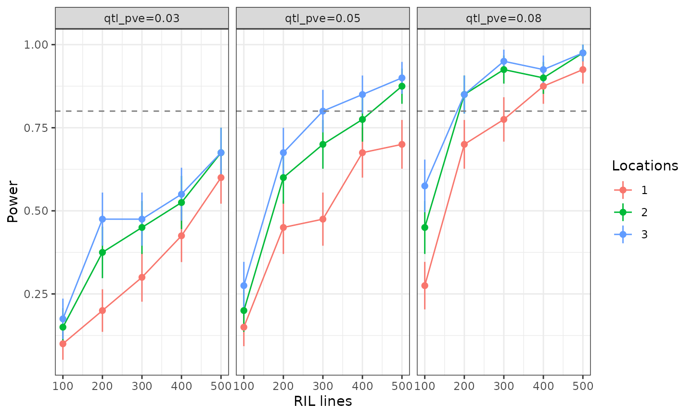
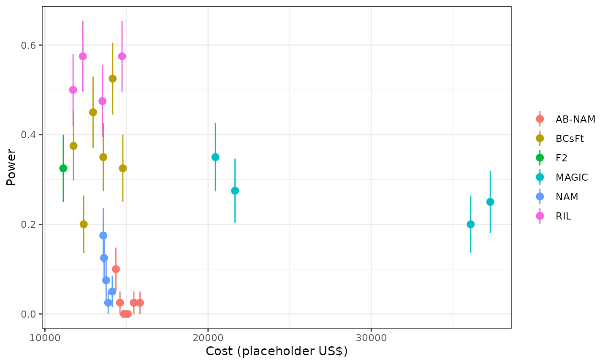
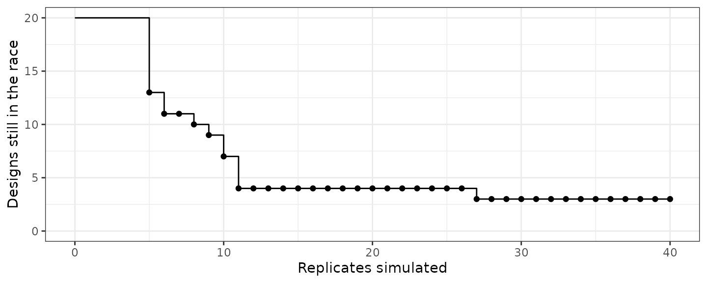
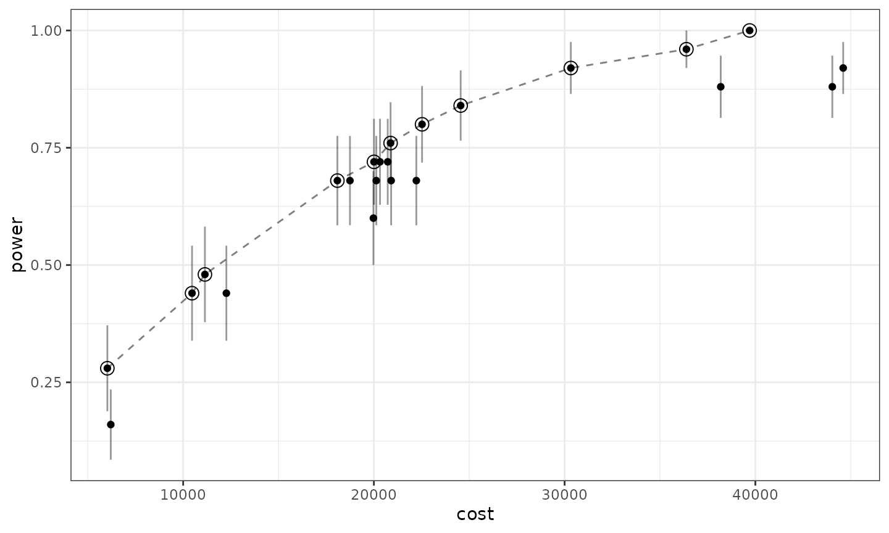

How many lines does a mapping population need? Is it better to grow more lines or to phenotype fewer lines at more locations? Does an advanced backcross, a nested association mapping (NAM) panel or a MAGIC population buy anything over a plain set of recombinant inbred lines (RILs) when the plots are the same? Power calculators for these questions have come and gone from CRAN, and none cover every design a soybean program uses. Simulation answers all of them the same way: build the population, phenotype it, scan the genome, and count how often the QTL is found.
The hard part of a simulation study is usually not the simulator but the bookkeeping: crossing every design with every assumption, running each combination enough times, keeping the random seeds paired so designs are compared fairly, and summarizing it all with honest standard errors. This vignette shows how tidyagsim takes that over, so a study of ~5,000 simulated mapping populations is a few lines of code.
All results below were computed by
data-raw/mapping-design.R in the package source (about 17
minutes on four cores) and are loaded here, so the code chunks that run
simulations are shown but not re-run when the vignette is built.
One design
mapping_population() is a simulation spec, the tidyagsim
equivalent of a parsnip model. Each replicate draws inbred founders on a
soybean-sized genome (20 chromosomes of 115 cM, a marker every cM),
places one QTL at a random position, builds the population by simulated
meiosis, phenotypes the lines, scans the genome with a permutation
threshold and records whether a peak above the threshold falls within 10
cM of the QTL.
ril <- mapping_population(type = "RIL", lines = 200, generation = 6, qtl_pve = 0.05)
ril
#> mapping_population simulation spec (engine: tidyagsim)
#>
#> Fixed arguments:
#> type = RIL
#> lines = 200
#> families = 10
#> backcrosses = 1
#> generation = 6
#> founders = 4
#> locations = 1
#> reps = 1
#> qtl_pve = 0.05
#> plot_h2 = 0.5
#> gxe_ratio = 0.5
#> n_background = 1000
#> qtl_donor_freq = 0.5
#> n_chromosomes = 20
#> chromosome_length = 115
#> marker_spacing = 1
#> scan_model = auto
#> n_perm = 100
#> alpha = 0.05
#> threshold = NULL
#> window = 10
#> scan_step = NULL
#> cross_cost = 25
#> ssd_cost = 2
#> genotype_cost = 20
#> plot_cost = 15
#> generations_per_year = 2
#> max_plots = Inf
#> max_cost = Inf
#> max_years = Infqtl_pve = 0.05 means the QTL would explain 5% of
single-plot phenotypic variance in a biparental RIL population; the
background is polygenic with a plot-basis heritability of 0.5. Run it on
50 paired replicate seeds:
single <- fit_resamples(ril, sim_replicates(50))
collect_metrics(single)
#> # A tibble: 6 × 6
#> .metric direction mean n std_err .config
#> <chr> <chr> <dbl> <int> <dbl> <chr>
#> 1 power maximize 0.44 50 0.0709 Config001
#> 2 other_peaks minimize 0.64 50 0.0686 Config001
#> 3 location_error minimize 6.92 22 2.31 Config001
#> 4 lines minimize 200 50 0 Config001
#> 5 cost minimize 9025 50 0 Config001
#> 6 years minimize 4 50 0 Config001Power is the share of replicates in which the QTL was detected, here
0.44 with a Monte Carlo standard error of 0.07.
location_error is averaged over the replicates that
detected the QTL (n is smaller). other_peaks
is the share of replicates with a significant peak on another
chromosome; with a polygenic background these are mostly real background
loci, not errors.
Tune instead of loop
To ask how power depends on population size and the number of field
locations, and whether the answer changes with the size of the QTL, mark
the design arguments with tune() and put the assumption
into scenarios. The grid is crossed with the scenarios and every
combination runs on the same 40 seeds:
ril_grid <- mapping_population(type = "RIL", lines = tune(), locations = tune(), generation = 6)
grid_res <- tune_grid(
ril_grid,
resamples = sim_replicates(40, scenarios = sim_scenarios(qtl_pve = c(0.03, 0.05, 0.08))),
grid = expand.grid(lines = c(100, 200, 300, 400, 500), locations = 1:3),
metrics = sim_metric_set(power, location_error, other_peaks, plots, cost)
)
grid_res
#> # Simulation study (grid): 15 designs x 40 replicates x 3 scenario(s) = 1800 simulations
#> # Spec: mapping_population; metrics: power, location_error, other_peaks, plots, cost
#> # Best by power:
#> # A tibble: 3 × 7
#> lines locations .metric mean n std_err .config
#> <int> <int> <chr> <dbl> <int> <dbl> <chr>
#> 1 500 3 power 0.85 40 0.0395 Config015
#> 2 500 2 power 0.842 40 0.0413 Config010
#> 3 400 3 power 0.775 40 0.0483 Config014That is 15 designs × 3 scenarios × 40 replicates = 1800 simulated populations, with no loop written. The tidy summary has one row per design, scenario and metric, with the usual tidymodels columns:
collect_metrics(grid_res) |> subset(.metric == "power") |> head()
#> # A tibble: 6 × 9
#> lines locations .metric direction mean n std_err .scenario .config
#> <int> <int> <chr> <chr> <dbl> <int> <dbl> <chr> <chr>
#> 1 100 1 power maximize 0.1 40 0.0480 qtl_pve=0.03 Config001
#> 2 100 1 power maximize 0.15 40 0.0572 qtl_pve=0.05 Config001
#> 3 100 1 power maximize 0.275 40 0.0715 qtl_pve=0.08 Config001
#> 4 200 1 power maximize 0.2 40 0.0641 qtl_pve=0.03 Config002
#> 5 200 1 power maximize 0.45 40 0.0797 qtl_pve=0.05 Config002
#> 6 200 1 power maximize 0.7 40 0.0734 qtl_pve=0.08 Config002
wide <- collect_metrics(grid_res, type = "wide")
ggplot(wide, aes(lines, power, colour = factor(locations))) +
geom_line() +
geom_pointrange(aes(ymin = power - power_se, ymax = power + power_se), size = 0.3) +
geom_hline(yintercept = 0.8, linetype = 2, colour = "grey50") +
facet_wrap(~.scenario) +
labs(x = "RIL lines", y = "Power", colour = "Locations") +
theme_bw()
Because all designs share seeds, the curves are smooth even with 40 replicates: the same founders, QTL positions and field errors are drawn for every design wherever the designs allow.
Picking a design
show_best() and the select_*() helpers work
as in tune, and accept constraints. The cheapest design with at least
80% power for a QTL explaining 5% of the variance:
show_best(grid_res, metric = "cost", constraints = list(power = 0.8), scenario = "qtl_pve=0.05", n = 3)
#> # A tibble: 3 × 7
#> lines locations .metric mean n std_err .config
#> <int> <int> <chr> <dbl> <int> <dbl> <chr>
#> 1 300 3 cost 22525 40 0 Config013
#> 2 500 2 cost 30025 40 0 Config010
#> 3 400 3 cost 30025 40 0 Config014and the design with the fewest plots whose power is within one standard error of the best:
select_by_one_std_err(grid_res, plots, metric = "power", scenario = "qtl_pve=0.05")
#> # A tibble: 1 × 3
#> lines locations .config
#> <int> <int> <chr>
#> 1 500 2 Config010With the placeholder costs used here (US$15 a plot, US$20 to genotype
a line and US$2 per plant per single-seed-descent generation), a second
or third location is cheaper than the extra lines needed for the same
power, because a location adds only plots while a line adds plots,
genotyping and nursery work. Replace the costs with your own
(plot_cost, genotype_cost,
ssd_cost, cross_cost) and the answer may
change; that is the point of making them arguments.
Comparing population types
Population types take different arguments: RILs tune the filial
generation, BCsFt tunes backcrosses and generation,
NAM tunes the number of families, MAGIC the number of founders. A
sim_set() holds one spec per type, each with its own grid,
and runs them all on the same seeds, like a workflow set. Every design
here has 300 lines in one location, so they use the same plots.
common <- list(lines = 300L, qtl_pve = 0.05)
types <- sim_set(
F2 = do.call(mapping_population, c(list(type = "F2"), common)),
RIL = do.call(mapping_population, c(list(type = "RIL", generation = tune()), common)),
BCsFt = do.call(mapping_population, c(list(type = "BCsFt", backcrosses = tune(), generation = tune()), common)),
NAM = do.call(mapping_population, c(list(type = "NAM", families = tune(), generation = 6L), common)),
`AB-NAM` = do.call(mapping_population, c(list(type = "AB-NAM", families = tune(), backcrosses = tune(),
generation = 6L), common)),
MAGIC = do.call(mapping_population, c(list(type = "MAGIC", founders = tune(), generation = tune()), common))
)
types <- sim_map(
types, "tune_grid",
resamples = sim_replicates(40),
grids = list(
RIL = data.frame(generation = c(3L, 4L, 6L, 8L)),
BCsFt = expand.grid(backcrosses = 1:2, generation = c(2L, 4L, 6L)),
NAM = data.frame(families = c(3L, 5L, 10L, 15L, 25L)),
`AB-NAM` = expand.grid(families = c(5L, 10L, 15L), backcrosses = 1:2),
MAGIC = expand.grid(founders = c("4", "8"), generation = c(4L, 6L))
),
metrics = sim_metric_set(power, location_error, support_interval, other_peaks, years, cost)
)
types
#> # A simulation set of 6 spec(s)
#> # A tibble: 6 × 4
#> wflow_id spec tuned result
#> <chr> <chr> <chr> <chr>
#> 1 F2 mapping_population "" resamples: 1 designs
#> 2 RIL mapping_population "generation" grid: 4 designs
#> 3 BCsFt mapping_population "backcrosses, generation" grid: 6 designs
#> 4 NAM mapping_population "families" grid: 5 designs
#> 5 AB-NAM mapping_population "families, backcrosses" grid: 6 designs
#> 6 MAGIC mapping_population "generation, founders" grid: 4 designs
ranked <- rank_results(types, "power")
ranked[, c("wflow_id", "rank", "parameters", "power", "power_se", "location_error", "years", "cost")]
#> # A tibble: 26 × 8
#> wflow_id rank parameters power power_se location_error years cost
#> <chr> <int> <chr> <dbl> <dbl> <dbl> <dbl> <dbl>
#> 1 RIL 1 "generation=4" 0.575 0.0792 7.58 3 12325
#> 2 RIL 2 "generation=8" 0.575 0.0792 3.67 5 14725
#> 3 BCsFt 3 "backcrosses=1, generation=6" 0.525 0.0800 3.59 5 14150
#> 4 RIL 4 "generation=3" 0.5 0.0801 3.92 3 11725
#> 5 RIL 5 "generation=6" 0.475 0.0800 3.07 4 13525
#> 6 BCsFt 6 "backcrosses=1, generation=4" 0.45 0.0797 7.80 4 12950
#> 7 BCsFt 7 "backcrosses=1, generation=2" 0.375 0.0775 7.82 3 11750
#> 8 BCsFt 8 "backcrosses=2, generation=4" 0.35 0.0764 2.41 4 13575
#> 9 MAGIC 9 "generation=4, founders=4" 0.35 0.0764 2.81 4 20450
#> 10 F2 10 "" 0.325 0.075 8.65 2 11125
#> # ℹ 16 more rows
ggplot(ranked, aes(cost, power, colour = wflow_id)) +
geom_pointrange(aes(ymin = power - power_se, ymax = power + power_se)) +
labs(x = "Cost (placeholder US$)", y = "Power", colour = NULL) +
theme_bw()
For detecting one biallelic QTL with 300 lines, a biparental population is hard to beat:
- RIL and BC1Ft lead. Later filial generations barely change power but shrink the location error, because more meioses break up linkage.
- F2 (phenotyped as F2:3 family means) is the quickest, 2 years to results, but has less power: the additive variance at the QTL in an F2 is half that in RILs.
- Two backcrosses lower power, since fewer lines carry the donor allele.
- NAM and AB-NAM lose power as families are added, because 300 lines spread over many families leave few lines per family and the QTL allele segregates only in the families whose donor carries it.
- MAGIC gives the narrowest location error of the multiparent designs but costs more here, since every line needs its own four- or eight-way cross.
This criterion counts only detection of one biallelic QTL. NAM and
MAGIC are usually chosen for what it leaves out: many alleles, a wider
genetic base and the chance to map several donors’ alleles at once. A
metric for those, added with sim_metric(), would rank them
differently; the study code would not change.
Racing: fewer simulations for the same answer
A wider search over lines (100–600) and generation (F3–F8) with 20
space-filling designs would take 800 simulations on 40 replicates.
tune_race() runs every design on 5 replicates, then drops
designs that a paired t-test says are worse than the leader, adding one
replicate at a time:
ril_race <- mapping_population(type = "RIL", lines = tune(), generation = tune(), qtl_pve = 0.05)
params <- extract_parameter_set_dials(ril_race) |>
update(lines = n_lines(c(100L, 600L)), generation = filial_generation(c(3L, 8L)))
race <- tune_race(ril_race, sim_replicates(40), grid = 20, param_info = params,
metrics = sim_metric_set(power, cost), burn_in = 5)
autoplot(race, type = "race")
show_best(race, n = 3)
#> # A tibble: 3 × 7
#> lines generation .metric mean n std_err .config
#> <int> <int> <chr> <dbl> <int> <dbl> <chr>
#> 1 597 6 power 0.875 40 0.0530 Config020
#> 2 536 8 power 0.8 40 0.0641 Config019
#> 3 497 6 power 0.775 40 0.0669 Config016The race used 264 simulations instead of 800, and the survivors were run on all 40 replicates, so their estimates are as good as a full grid’s.
Asking the question directly
Often the real question is “what is the cheapest design with at least
80% power?”. tune_bayes() answers it with a
Gaussian-process search in which expected improvement in cost is
weighted by the modelled probability of meeting the power
constraint:
ril_cost <- mapping_population(type = "RIL", lines = tune(), locations = tune(), reps = tune(),
generation = 6, qtl_pve = 0.05)
params <- extract_parameter_set_dials(ril_cost) |>
update(lines = n_lines(c(100L, 800L)), locations = n_locations(c(1L, 4L)), reps = n_reps(c(1L, 2L)))
bayes <- tune_bayes(ril_cost, sim_replicates(25), param_info = params,
metrics = sim_metric_set(cost, power, plots),
constraints = list(power = 0.8), initial = 8, iter = 15)
show_best(bayes, metric = "cost", constraints = list(power = 0.8), n = 3)
#> # A tibble: 3 × 8
#> lines locations reps .metric mean n std_err .config
#> <int> <int> <int> <chr> <dbl> <int> <dbl> <chr>
#> 1 300 3 1 cost 22525 25 0 Config016
#> 2 327 3 1 cost 24550 25 0 Config011
#> 3 404 3 1 cost 30325 25 0 Config004
It reached the same answer as the grid (about 300 lines at three locations) after 23 designs, without anyone choosing the grid.
Scaling up
Everything above ran on a laptop-sized machine. For bigger studies:
-
control_sim(parallel = TRUE)withfuture::plan(future::multisession)runs designs in parallel, on Windows too. -
control_sim(cache = "cache-dir")saves every finished replicate; rerun the same code after an interruption and only the missing replicates are simulated. -
write_slurm_array()writes Slurm scripts for SCINet Ceres or Atlas that split atune_grid()across an array job and collect the results from the shared cache.
What the simulator assumes
Results are only as good as the model.
mapping_population() assumes inbred founders with biallelic
markers at 50% frequency, no crossover interference, an additive trait
(no dominance or epistasis), one target QTL plus a polygenic background
of n_background loci, and line means over locations and
reps with genotype-by-location variance. The MAGIC scan uses true
founder origin, so it is an upper bound on what haplotype reconstruction
achieves. See ?mapping_population for every argument; each
can be fixed, tuned, or varied as a scenario.
In total this vignette summarizes 3,729 simulated mapping populations.